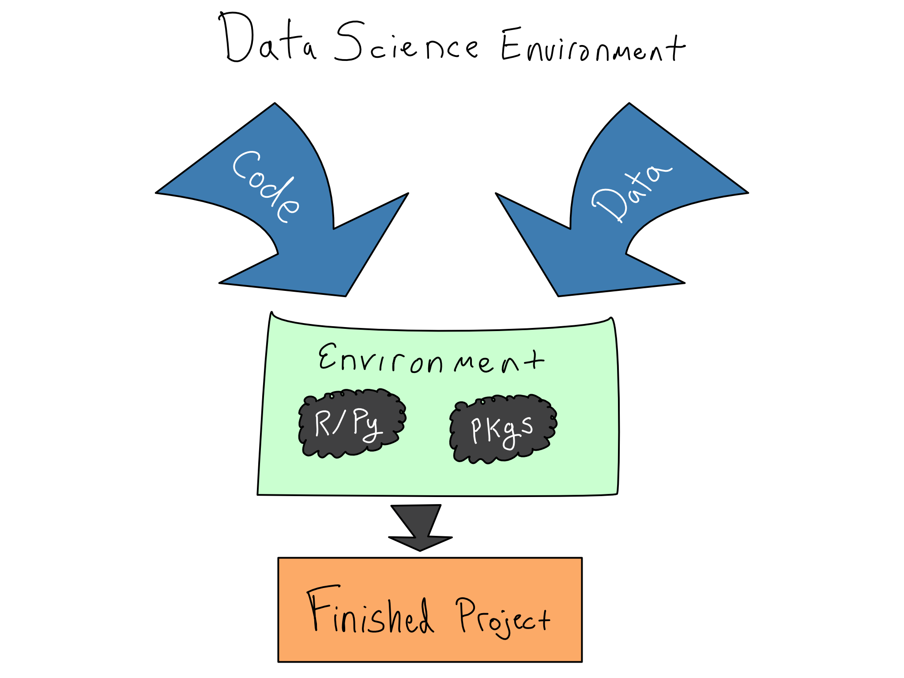
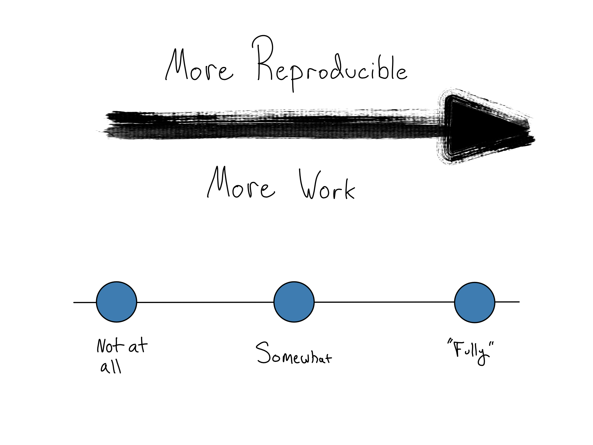
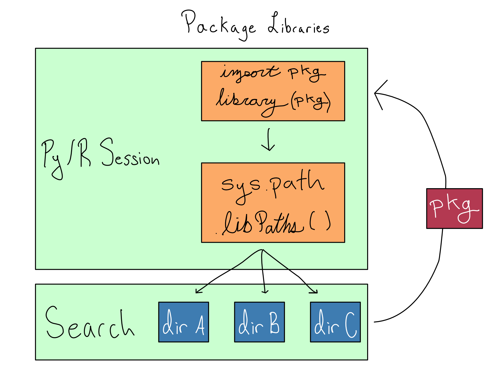

1 Environments as Code
I want to turn you a professional chef.
Not a real chef mind you, but the data science equivalent. Creating a great data science project is like cooking a delicious meal. You have to take raw ingredients and a recipe – your data and code – and turn them into something great.
And while I don’t really care about your prowess in a literal kitchen, I want you to feel like a pro in your data science environment. Professionals in cooking or data science need to always be concerned with the literal or figurative sharpness of their tools and cleanliness of their kitchen.
In data science, that means actively managing your data science environments using code. Kitchen metaphors aside, your data science environment is the stack of software and hardware below your code, from the R and Python packages you’re using right down to the physical hardware your code runs on.

Ignoring the readiness of the data science environment results in the dreaded it works on my machine phenomenon with a failed attempt to share code with a colleague or deploy an app to production.
In some cases, you might have no choice. Some industries are highly regulated and analysts need to be able to guarantee that they can reproduce an analysis exactly – even a decade later – down to the layer of machine instructions. In this world, IT/Admins take a physical piece of hardware that they know runs the analysis, make a backup or two, and just keep that physical piece of hardware running for many years.
If you don’t work in such an industry, you don’t have to go all the way there. Trying to craft an environment that’s completely reproducible is somewhat of a fool’s errand. There’s always a tradeoff. Making things more reproducible generally takes more work – in a way that’s frustratingly asymptotic.

But the first steps towards a more reproducible environment is simple enough to fit in a single book chapter (this one!) – to create and use environments as code.
The DevOps term for this is that environments are stateless or in the phrase that environments should be “cattle, not pets”. That means that you can use standardized tooling to create and destroy functionally identical copies of the environment without secret state being left behind.
In this chapter, we’ll get into the why and how of capturing data science environments in code, saving them for later, and then easily moving them around from place to place.
1.1 Environments have layers
Data science environments have three distinct layers. Reasoning clearly about these layers can reveal your actual reproducibility needs, and which environmental layers you need to target putting into code.
At the bottom of the environment is the hardware layer. This is the physical and virtual hardware where the code runs. For example, this might be your laptop or a virtual server from a cloud provider. Above that is the system layer, which includes the operating system, important system libraries, and Python and/or R. And above that is the package layer, where your Python and R packages live.
Layers of data science environments
| Layer | Contents |
|---|---|
| Packages | Python + R Packages |
| System | Python + R Language Versions Other System Libraries Operating System |
| Hardware | Virtual Hardware Physical Hardware |
In an ideal world, the hardware and system layers should be the responsibility of an IT/Admin. It may be the case that you’re responsible for them as well, but then you’re just fulfilling that role.
As a data scientist, you can and should be responsible for the package layer, and getting this layer right is where the biggest reproducibility bang for your buck lies. If you do find yourself managing the system or hardware layer, chapters Chapter 7 through Chapter 14 will teach you all about how to manage those layers.
1.2 The package layer
There are three different places packages can live.
- In a repository. You’re used to installing packages from a repositories like PyPI, Conda, CRAN, or BioConductor. These repositories are like the grocery store. The food is packaged up and ready to go, but inert. There are also many varieties there. Repositories hold both current and archival versions of each package.1
- In a library. Once you install the packages you need with
install.packages()orpip installorconda install, they’re in your library, which is the data science equivalent of a pantry. Libraries can hold – at most – one version of any given package. Libraries can be specific to the project, user, or shared across the system. - Loaded. Loading a package with a
libraryorimportcommand is like taking the food out of the pantry and putting it on the counter so you can actually cook with it.
As a data scientist, the atomic unit of package reproducibility is in the middle – the library.
Let’s say you work on one project for a while, installing packages from the repository into your library. You go away for a year of working on other projects or try to share your project with someone else. When you come back, it’s likely that future you or your colleague you won’t have the right versions and your code will break.
What would’ve been better is if you’d had an environment as code strategy that created a portable environment for each project on your system.
A successful package environment as code setup has two key attributes:
- Your package environment is isolated and cannot be disrupted by other activities on the same machine.
- Your package environment can easily be captured and transported elsewhere.
In Python, there are many different options for virtual environment tooling. In the context of production data science, I recommend {virtualenv}/{venv} and related tools.
In R, there’s really only one game in town; the {renv} package.
Conda allows you to create a virtual environment in user space on your laptop without having admin access. It’s especially useful when your machine is locked down by IT.
That’s not a great fit for a production environment. Conda smashes together the language version, the package management, and, sometimes, the system library management. This is conceptually simple and easy-to-use, but it often goes awry in production environments. In a production environment (or a shared workbench server) I recommend people manage Python packages with a virtual environment tool like {venv} and manage system libraries and versions of Python with tools built for those purposes.
1.3 Using a virtual environment
Using a virtual environment tool is a three-step process.
At a high level, you’ll create and use standalone package libraries, use tooling to capture the state of that package environment, and restore that state wherever else you might need the environment.
See the cheatsheet in Appendix D for the exact commands for both R and Python.
Step 1: Create standalone package libraries
Each project should have it’s own {renv}/{venv} library. When you start your project, it should be in a standalone directory that includes everything the project needs – including a virtual environment.
This is called a project-oriented workflow. You can do it in either R or Python. The What They Forgot to Teach You About R course (materials available online at rstats.wtf) is a great intro to a project-oriented workflow whether you work in R or Python. The tooling will be somewhat different in Python, but the idea is the same.
If your project includes multiple content items (say an app, API, and ETL script), I recommend using one git repo for the whole project with each content item in its own directory with its own virtual environment.
When you work on the project, you activate the virtual environment and install and use packages in there.
Step 2: Document environment state
The way to make the environment portable is to document what’s in the package library. Both {renv} and {venv} have standard file formats for documenting the packages, as well as the versions, that are installed in the environment.
In {renv}, the file is called a lockfile and it’s a requirements.txt in {venv}.
Since all this work is occurring in a standalone package environment, you don’t have to worry about what will happen if you come back after a break. You’ll still have those same packages to use.
Step 3: Collaborate or deploy
When you go to share your project, you don’t want to share your actual package libraries. Package installs are specific to the operating system and the language version you’re using, so you want your target system to install the package specifically for that system.
For example, if you’re working on a Mac and you collaborate or deploy to a Windows or Linux machine, you can’t share the actual package files. Those machines will need to install the required set of packages for themselves.
Additionally, package files can be large. Just sharing a file of requirements makes downloads and uploads much more manageable, especially if you’re using git. So the process is to check your lockfile or requirements.txt into git with your project.
1.3.1 Step 4: Use a virtual environment
Then, when your deployment target, collaborator, or future you downloads your project, it will restore the documented environment, again using tools from {renv}/{venv}.
1.4 What’s happening under the hood
Installed packages are stored in libraries, which are just directories on your system. Your Python or R session keeps track of the set of libraries it should use with sys.path in Python and .libPaths() in R.
So when you install a package, it installs into the first library allowed. And when you load a package with import or library, it searches the directories from sys.path or .libPaths() and returns the package when it finds it.

Each library can contain, at most, one version of any package. So order matters for the directories in sys.path or .libPaths(). Whatever version is found first during the search will be returned.
This works the same for Python modules as for packages. I’m just using the term packages since most modules that aren’t purpose built for a project are in packages.
If you’re not in a virtual environment, the top libraries are user-level libraries by default. Activating a virtual environment puts project-level libraries at the top of the lists in sys.path or .libPaths() so package installs and loads happen from there.
In order to economize on space and install time, both {renv} and {venv} do something a little clever. The packages in your project-level library aren’t actually there. Instead, {renv} and {venv} keep user-level package caches of the actual packages and use symlinks so there’s actually only ever one copy of the package installed.
Sometimes, IT/Admins want to further save space by sharing package caches across users. This is usually a mistake. Sharing package caches leads to headaches over user file permissions to write to the package cache versus read. Storage space is cheap, way cheaper than your time. If you have to do it, both {renv} and venv include settings to allow you to relocate the package cache to a shared location on the server.
1.5 A note on Conda
Many data scientists love Conda for managing their Python environments.
Conda allows you to create a virtual environment in user space on your laptop without having admin access. It’s especially useful when your machine is locked down by IT.
That’s super useful for working on your laptop, but it’s not a great fit for a production environment. Conda smashes together the language version, the package management, and, sometimes, the system library management. This has the benefit of being conceptually simple and easy-to-use. But I’ve often seen it go awry in production environments. In a production environment (or a shared workbench server) I recommend people use a tool that’s just for package management, like {venv}, as opposed to an all-in-one tool like Conda.
1.6 Comprehension Questions
- Why does difficulty increase as the level of required reproducibility increase for a data science project. In your day-to-day work, what’s the hardest reproducibility challenge?
- Draw a mental map of the relationships between the seven levels of the reproducibility stack. Pay particular attention to why the higher layers depend on the lower ones.
- What are the two key attributes of environments as code? Why do you need both of them? Are there cases where you might only care about one?
- Draw a mental map of the relationships between the following: package repository, package library, package, project-level-library,
.libPaths()(R) orsys.path(python), lockfile - Why is it a bad idea to share package libraries? What’s the best way to collaborate with a colleague using an environment as code? What are the commands you’ll run in R or Python to save a package environment and restore it later?
1.7 Lab 1: Create and use a virtual environment
In this lab, we’re going to start working on our penguin explorer website. We’re going to create a simple website using Quarto, which is an open source scientific and technical publishing system that makes it easy to render R and Python code into beautiful documents, websites, reports, and presentations.
We’re going to create pages for a simple exploratory data analysis and model building from the Palmer Penguins dataset. In order to get to practice with both R and Python, I’m going to do the EDA page in R and the modeling in Python. By the end of this lab, we’ll have both pages created using standalone Python and R virtual environments.
If you’re just getting started, check out the Quarto website to start using Quarto in the editor of your choice.
Make sure you add each page below to your _quarto.yml so Quarto knows to render them.
1.7.1 EDA in R
Let’s add a simple R-language EDA of the Palmer Penguins data set to our website by adding a file called eda.qmd in the root directory of the project.
Before you start adding code, create and activate an {renv} environment with renv::init().
Now, go ahead and do your analysis. Here’s the contents of my eda.qmd.
eda.qmd
---
title: "Penguins EDA"
format:
html:
code-fold: true
---
## Penguin Size and Mass by Sex and Species
```{r}
library(palmerpenguins)
library(dplyr)
library(ggplot2)
df <- palmerpenguins::penguins
```
```{r}
df %>%
group_by(species, sex) %>%
summarise(
across(
where(is.numeric),
\(x) mean(x, na.rm = TRUE)
)
) %>%
knitr::kable()
```
## Penguin Size vs Mass by Species
```{r}
df %>%
ggplot(aes(x = bill_length_mm, y = body_mass_g, color = species)) +
geom_point() +
geom_smooth(method = "lm")
```Feel free to copy this Quarto doc right into your website or to write your own.
Once you’ve finished writing your EDA script and checked that it previews nicely into the website, save the doc, and create your lockfile with renv::snapshot().
1.7.2 Modeling in Python
Now let’s build a {scikit-learn} model for predicting penguin weight based on bill length in a Python notebook by adding a model.qmd to the root of our project.
Again, you’ll want to create your virtual environment and activate it before you start pip install-ing packages into the environment.
Here’s what’s in my model.qmd, but you should feel free to include whatever you want.
model.qmd
---
title: "Model"
format:
html:
code-fold: true
---
```{python}
from palmerpenguins import penguins
from pandas import get_dummies
import numpy as np
from sklearn.linear_model import LinearRegression
from sklearn import preprocessing
```
## Get Data
```{python}
df = penguins.load_penguins().dropna()
df.head(3)
```
## Define Model and Fit
```{python}
X = get_dummies(df[['bill_length_mm', 'species', 'sex']], drop_first = True)
y = df['body_mass_g']
model = LinearRegression().fit(X, y)
```
## Get some information
```{python}
print(f"R^2 {model.score(X,y)}")
print(f"Intercept {model.intercept_}")
print(f"Columns {X.columns}")
print(f"Coefficients {model.coef_}")
```Once you’re happy with how the page is working, capture your dependencies in a requirements.txt using pip freeze > requirements.txt on the command line.
They don’t always include archival versions, but they usually do.↩︎